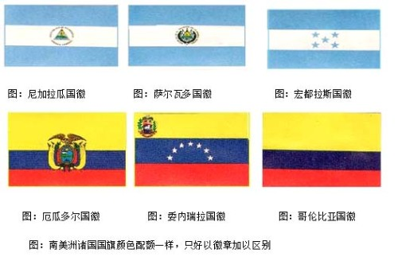
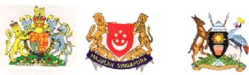
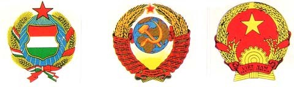

世界各国国徽的故事 江铭辉编写
国徽和国旗一样皆象征一个国家所崇尚的精神，一般而言国旗的图案较抽象，而国徽的图像较具体化，国徽大部份皆以强壮、勇猛的动物为象征，也有国家把其本国特有的植物和动物昼在一起，更有趣的是有些国家的国旗色彩的配置相同，不得不以徽章来加以区别其国旗，如中美洲的宏都拉斯、尼加拉瓜、萨尔瓦多三个，以及南美洲的厄瓜多尔、哥伦比亚、委内瑞拉三个国家等皆属于这个例子。

总之探讨国徽设计上的共通点，也可以说是非常有意思的，兹简介如下:
一、强壮、勇猛的动物为国徽
在动物方面，多出现百鸟之王的鹫或百兽之王的狮子，因为自古以来，这两种动物的强壮、勇猛常被视为权威的象征，其中又以美国国徽的鹫最著名，美国国徽的鹫和别的国家的鹫不同，是象征古代罗马共和国政体的头鹫，并用星箭质的条纹来表示最初的十三州，箭是表示战争，橄榄表示和平，徽章制订于1783年，其他以鹰鹫为国徽的国家，尚有印度尼西亚、科威特、约旦、迦纳、巴拿马、哥伦比亚、奥地利等国的国徽，以狮子为国徽的国家也不少，但有时是将狮子再配合另一种动物方式存在，单纯狮子一种动物当国徽的国家有挪威、肯亚及巴拉圭，其他出现的勇猛动物尚有加彭及盖亚那国徽的豹子。
图：美国国徽 图：印度尼西亚国徽 图：迦纳国徽 图：科威特国徽
图：巴拿马国徽 图：奥地利国徽 图：约旦国徽 图：哥伦比亚国徽
图:世界上采用强壮、勇猛为国征的国家最多。
二、两种动物为国徽
许多国家的国徽皆是以两种的动物当国徽，其中最最著名的是英国。严格讲英国的徽章就是皇室的徽章，不是国征。支撑盾牌左侧是狮子，右侧是独角兽，盾牌周围是嘉德勋章。丝带上有「神予我权利」的字样。牌的图案中，左上与右下的狮子是象征英格兰，左下的竖琴是象征爱尔兰，其他含有两种动物之国徽，尚有新加坡、乌干达、格瑞那达、智利。

图:也有些国家采用二种动物当国徽，但三种以上动物当国徽则罕见。
三、以其他动物为国徽:
有些国家会以其本国特有之动物当国徽，以便看了能一目了然，如科特迪瓦的国徽，绿色的盾牌中画有象头，让人一看毫无疑间的就知道这个国家是科特迪瓦，一般人对鳄鱼的印象并不很好，但是全世界也有以鳄鱼当国徽的国家如牙买加、赖索托的国征。
图：科特迪瓦国徽 图：赖索托王国国徽 图：牙买加国徽
图：也有国家以该国特有动物为国徽
四：以粮食为国徽
以粮食为国徽的国家大部分是共产主义的国家，苏俄及匈牙利的国徽皆以小麦为背景，唯目前共产主义已经解体，其国徽可能也会跟着改，唯越南因其主要农作物是稻米，故以稻穗作圈，配以象征社会主义的星，再用齿轮表示完成工业化的意愿。

五、以风土文化、固有特产为国徽
世界各国的国徽中，将风土有关的动、植物或宗教信仰图案化再熔入国徽中，不胜枚举，最有趣的如韩国与尼泊尔的国徽，韩国的国徽，采取国花「木仅花」的花瓣，中央配上表示阴阳的太极，由于木仅树干上会生许多花苞，一朵花凋落后，其它花苞会连续不断地开花，象征民族生命无穷尽的强韧性，至于尼泊尔的国徽，是一个含有各样宗教而饶富意思的国徽。除了佛陀的足迹外，还配以人民的武器，消灭邪恶的寺院，神圣的牛及雉鸡等，且上面记载「我们祖国比天堂更可亲」。其他有趣的宗教国徽如巴基斯坦国徽上部仍有象征回教的星、刀与月及全部为绿色，西萨摩亚的十字架表示该国是个基督教国，并标文字「神啊！但愿作为萨摩亚的基础。」乌拉奎及古巴的国徽也是非常有趣，在乌拉圭的国徽中，画有象征独立金黄色太阳下的盾牌图案，在左上是表示天秤(正义与自由)，右上是表示蒙特维的亚的山丘，左下是马(自由)，右下是牛(财富)。用国家色彩的丝带连结月桂树与橄榄的树枝。古巴的国徽盾牌上的帽子是表示自由，风景是加勒比海与佛罗里达州，犹加敦半岛。钥匙是表示古巴地理位置的重要性，环绕盾牌的橄榄与月桂树是表示和平与胜利。
图：西萨摩亚国徽 图：乌拉圭国徽 图：古巴国徽
图：以风土文化、固有特产为国徽者，也很多。